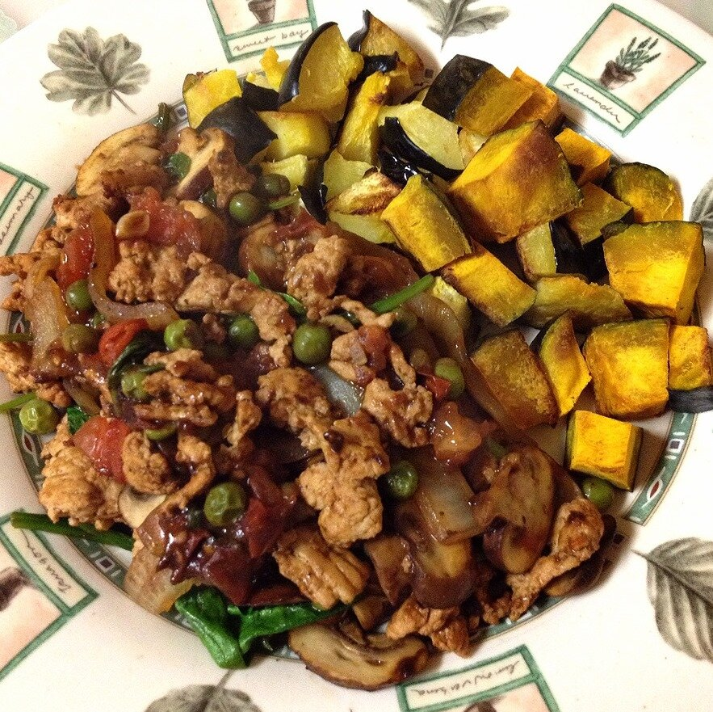

BBQ Turkey Sautee
I've had this craving in my head for a week or so, but didn't have any ground turkey! Bummer. I finally went grocery shopping today so I made it for dinner asap :D So so good and also good for dieters because this entire recipe comes out to be 220 calories. Of course though, I had mine with roasted kabocha squash and acorn squash to bump up the carbs and calories. Bulking girl gotta get dem carbs innnnn.

BBQ Turkey SauteeServes: 1
- 4 oz of 97% lean ground turkey
- 1/3 cup frozen peas
- 1/4 cup sliced onion
- 5-6 baby bella mushrooms
- 3 tomato slices
- 2 garlic cloves
- 1 large handful of spinach
- 3-4 TBSP Walden Farms Thick & Spicy BBQ sauce (or original)
- 3 TBSP water
First, begin to sautee your ground turkey in a medium pan sprayed with a nonstick spray. While that's cooking, microwave your peas for 1 minute in the microwave. Also, cut your onion and mushrooms into slices, cut the tomato into small pieces and cubes, and mince the garlic cloves. Once the ground turkey is cooked entirely, set that to the side. Now, sautee the onions and mushrooms until lightly browned; then toss in the tomatoes, peas, and garlic cloves. After another 1-2 minutes, put the turkey back into the pan, as well as the large handful of spinach, the walden farms bbq sauce, and the water. Let everything cook down until the sauce thickens and the spinach is wilted. It's ready when it's not liquid-y anymore - just thick!